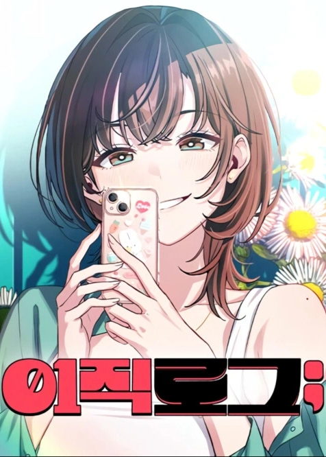

| Quick Info | |
|---|---|
 | |
| Season: | XI Pre-Season |
| Contract: | Clover's Quest |
| Contractor: | Frazzle |
| Completed: | 54/? Chapters (Season 1 Completed) |
| Format: | Manhwa |
| Author: | Si-Mok U |
| Date: | 2025 |
| Genre: | Romance, Comedy |
| Link: | Anilist |
As I am currently in a month of non-stop exam, I try to spend my time wisely and am very strict to what I do everyday. In a way, this is like running a month-long marathon. The drawback is that I didn't plan any time for reading manga instead of books. Hopefully, Frazzle exists in this world and brought this jewel into the light for me. I usually can't enjoy the long strip format, but this time it was too good to annoy me. And I'm here to give some arguments why ! The Story paragraph is spoiler free, the following ones only have light spoils.
The story seems pretty simple but I have no real experience with the genre 'Romance', and even less with 'Office'. But I'm sure this one has something very special, being about a software engineer, and using this as a central point. The workplace surely is the most important setting, but the work is too, and they have very realistic tasks to perform, I liked that.
Of course, Max, the main character, is the most nerdy geek existing in the world. He is actually giving 2 hours per day to refactoring code for free, getting his colleagues' work done at the same time, having a hard time understanding people, while having very quiet yet powerful emotions running through him. It may help that I kind of look like him rather than the joyful Joy, but it was so much easy to identify to him that sometimes, I needed to make me remember he doesn't have the same ideas as I do. Because he is a character, every trait is exaggerated, but remain realistic.
The story is mainly watching him grow from a lone guy typing on a mechanical keyboard, to a man helping people when he can, living his best social life. And this was just adorable to read. Every character has this side of weakness that eventually gets visible, and it's always emotional. When they are not serious, they are just teasing Max for no reason, playing with his reactions without being too much of a hassle.
There was always a moment in every chapter where I would laugh out loud because of some random unexpected joke that I rely to. Because they are always unexpected, and are still so smooth with the characters and the story, that's what make them so cool.
The only thing I lack is the cultural knowledge, even if I know a bit of the Japanese one. I have no idea of the importance of names, age, personal life, honorifics and such stuff in a relationship, that are very precious and intimate in Asia. And seeing the emphasis on the name and age, this sounds like a huge cultural gap, making me want to read the manhwa in Korean to grasp those details, what I obviously can't do. That's a shame.
I already talked about Max a bit, so I would just add that I kind of feel lost with his personality sometimes. He is always so shy, but in some random moment he would have the courage to say something very important to him, yet so embarrassing. Oh and I prefer him without this Korean style haircut.
Joy is somehow... hard to get too. I get the burden it is to be popular in such a men-populated field, but I can't understand why telling point blank to Max that crossing boundaries would be impossible. I mean, what's a relationship if not an always evolving link ? Those boundaries are evolving too, and they do in the story, but because of this initial stop signal, she kind of created difficult situations. And I know that, for Max, hearing "I know you're not the type to be emotional" is much more hard to live than just obvious hints to stay distant. But again, I'm more like Max than like Joy, so these thoughts are only a kid's.
I'll add Esther to my presentations, because she is also cute when being fragile. She has a very strong shell, but when it cracks open, there is nothing but someone very human, very fun and passionate, holding to her values. The sentence in the manhwa that hit me the most is hers, when she says that being from the opposite gender, she couldn't be real friend with Max. She holds so much meaning with this.
Finally, I'll just say that Jaden is trash. He's the reason I don't like most men I know. Seriously, just stay at your place and shut up.
The art of Ha-An Lee is simple, but very powerful. The important events are always strengthened by light and color effects, faces are always expressive (despite Max having no iris), and all those funny jokes only work thanks to those well-thought panels. Everyone is cute, beautiful, and still hold their singularity when serious times come.
You may have understood, this manhwa was here when I needed cute things in my life, and it was the perfect one for this. All my stress just burst out when thinking of those two slowly getting closer, him being super clumsy, them being super funny... It may not be a psychological masterpiece, but I truly had an awesome time reading it. Thanks Frazzle ! 9/10